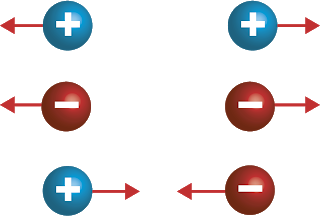
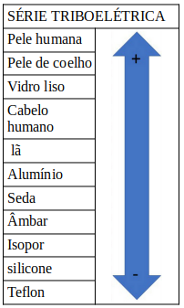
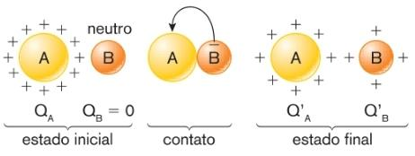
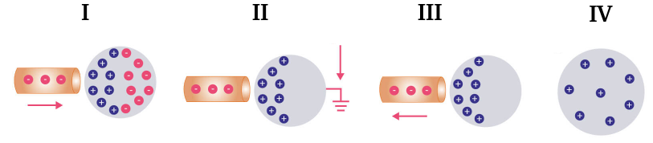

Aula9-72: Cargas elétricas e processos de eletrização
Cargas elétricas
A carga de um corpo é dada pela soma algébrica das cargas de todas as partículas que o compõem: dos prótons (positivos) e dos elétrons (negativos). Os nêutrons, por serem neutros, não contribuem para essa soma. Como a carga do elétron, em módulo, é igual à do próton, concluímos o seguinte:
-
Corpo neutro: quando um corpo possui o mesmo número de elétrons e de prótons (Ne = Np), sua carga total é zero; dizemos, então, que o corpo está neutro.
-
Corpo negativamente carregado: quando um corpo possui mais elétrons do que prótons (Ne > Np), sua carga será negativa; dizemos, então, que o corpo está negativamente carregado.
-
Corpo positivamente carregado: quando um corpo possui mais prótons do que elétrons (Ne < Np), sua carga será positiva; dizemos, então, que o corpo está positivamente carregado.
Considerando que a carga de um corpo é igual à carga do excesso de elétrons ou de prótons nele, e que a carga de um elétron vale e = -1,6 . 10-19 C, podemos então encontrar a carga do corpo por meio da seguinte expressão:
Em que:
◦ é a carga;
◦ é o número de
elétrons ou prótons em excesso;
◦ é a carga
fundamental.
Obs.: Note que a carga é uma grandeza quantizada, isto é, não pode assumir qualquer valor, mas
apenas valores múltiplos da carga fundamental .
Lei de Du Fay (princípio da atração e repulsão)
Cargas de mesmo sinal se repelem e cargas de sinais opostos se atraem.

Condutores e isolantes
Quanto à capacidade de transmitir cargas elétricas, os materiais podem ser classificados em pelo menos quatro grupos: isolantes, semicondutores, condutores e supercondutores. Destes grupos, discutiremos dois deles:
Isolantes
Condutores
-
Isolantes: são os materiais que não possuem elétrons livres (elétrons fracamente aprisionados aos núcleos dos átomos) e que, portanto, oferecem uma maior resistência ao trânsito de elétrons. São exemplos de materiais isolantes:
◦ Ar;
◦ Cerâmica;
◦ Madeira seca;
◦ Vidro;
◦ Penugem e pelagem.
-
Condutores: são os materiais que possuem elétrons livres e que, assim, oferecem uma baixa resistência ao trânsito de elétrons. Os metais geralmente são bons condutores; os melhores condutores elétricos naturais, em ordem de condutividade, são a prata, o cobre e o ouro. Alguns outros exemplos destes materiais são:
◦ Corpo humano;
◦ Alumínio;
◦ Ferro;
◦ Silício;
◦ Grafite.
Processos de eletrização
São os processos que promovem a retirada ou a entrega de elétrons de/para um corpo. Como consequência destes processos, a carga do corpo é alterada. Existem diferentes meios de se eletrizar um corpo:
Eletrização por atrito
Eletrização por contato
Eletrização por indução
-
Eletrização por atrito: este processo ocorre sempre que esfregamos dois corpos de constituição material diferente. Isso decorre do fato de que corpos constituídos a partir de materiais distintos possuirão diferentes níveis de afinidade por elétrons. É possível, por meio da experimentação, criar uma tabela que hierarquiza uma série de materiais, organizados do menos eletronegativo (que possui uma menor afinidade, um menor poder de atração, por elétrons) ao mais eletronegativo (que possui uma maior afinidade).

A tabela ao lado lista alguns materiais, do menos ao mais eletronegativo. Na prática, esta tabela está nos dizendo que, se atritarmos, por exemplo, isopor com a pele humana, como o isopor é mais eletronegativo, ele tenderá a roubar elétrons da pele humana, deixando-a positivamente carregada, enquanto ele próprio fica com carga negativa.
DO QUE DECORRE A ELETRONEGATIVIDADE DE UM MATERIAL?
Analogamente à eletronegatividade de um átomo, que depende de seu raio atômico e da quantidade de cargas que o constitui, em se tratando de materiais como os listados ao lado, a eletronegatividade dependerá dos átomos que compõem as moléculas dos materiais e da própria geometria dessas moléculas.
-
Eletrização por contato: ocorre sempre que dois corpos passíveis de trocar elétrons são colocados em contato físico. Para ilustrar este processo, pense em um par de corpos: um neutro e outro positivamente carregado. Como o corpo positivo está com escassez de elétrons, o corpo neutro cederá a ele alguns elétrons, de modo a estabelecer um equilíbrio de cargas.

Obs.: Num sistema isolado, o somatório algébrico das cargas é constante, ou seja, as cargas não são criadas nem destruídas, mas apenas transferidas de um corpo a outro. A esse fato dá-se o nome de princípio da conservação das cargas.
-
Eletrização por indução: para eletrizar um corpo por meio da indução, primeiramente é preciso I) aproximar uma carga (objeto indutor) de um objeto propício à polarização. A presença dessa carga fará o objeto se polarizar; em seguida, II) permitir a chegada ou a saída de elétrons do corpo induzido por meio de um condutor ligado à terra. Por fim, III) interromper o condutor, fazendo com que o objeto permaneça eletrizado (IV).
